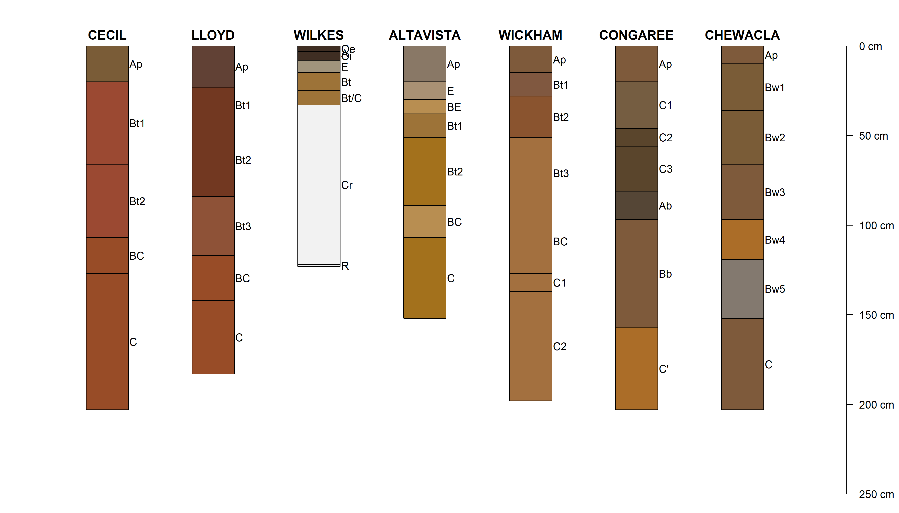
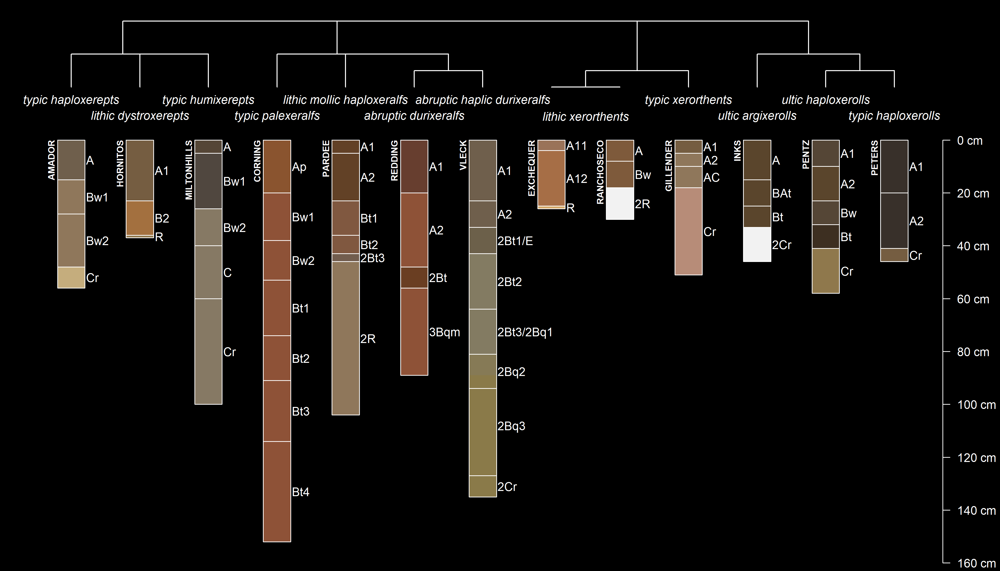

Installation
Get the stable version from CRAN:
install.packages('soilDB', dependencies = TRUE)
Get the development version from Github:
remotes::install_github("ncss-tech/soilDB", dependencies = FALSE, upgrade = FALSE, build = FALSE)
soilDB 2.0
NASIS
- low-level functions return empty
data.frameobjects when local database (or selected set) is empty -
fetchNASIS()is now a wrapper around pedon and component “fetch” functions -
uncode()is now used in all queries to local NASIS database - many (coded) column names in pedon
@siteand@horizonshave changed - lower case is used for all un-coded data
Database APIs
- SDA
- SSURGO Local Geodatabases
- NASIS local database
- NASIS WWW interface
- SSURGO/KSSL via SoilWeb
- SCAN/SNOTEL
- Henry Mount Soil and Water Database
- SoilGrids
Examples
library(aqp)
library(soilDB)
library(sharpshootR)
# get morphology + extended summaries
soils <- c('cecil', 'altavista', 'lloyd', 'wickham', 'wilkes', 'chewacla', 'congaree')
s <- fetchOSD(soils, extended = TRUE)
# viz of hillslope position, from SSURGO component records
res <- vizHillslopePosition(s$hillpos, annotation.cex = 0.9)
print(res$fig)
# profile sketches
par(mar=c(0,1,0,4), xpd=NA)
plot(s$SPC, plot.order=res$order, cex.names=1, axis.line.offset = -0.1, width=0.2)
# siblings
s <- 'Amador'
amador <- siblings(s, only.major = FALSE, component.data = TRUE)
# limit to named soil series
sib.data <- subset(amador$sib.data, !compkind %in% c('Miscellaneous area', 'Family', 'Taxon above family'))
# get parsed OSD records
sibs <- fetchOSD(c(s, unique(amador$sib$sibling)), extended = TRUE)
# invert colors
par(mar=c(0,0,0,0), fg='white', bg='black')
# create taxonomy dendrogram
SoilTaxonomyDendrogram(sibs$SPC, dend.width = 1.5, y.offset = 0.4,
scaling.factor = 0.02, width = 0.2,
cex.taxon.labels = 1, cex.names = 1)